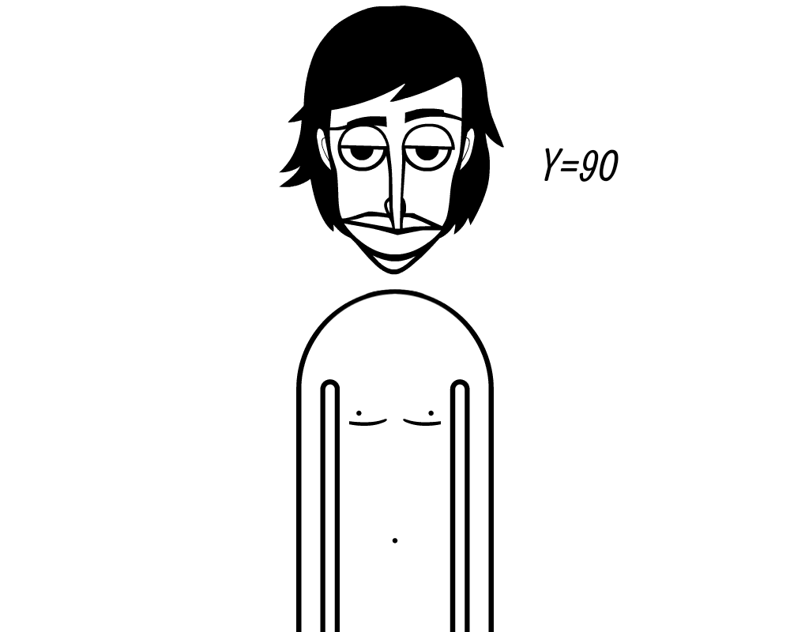

Digital Artwork
Description: A black and white digital painting of incredibox man.
File Type: PNG (Portable Network Graphics) supports lossless compression and transparent backgrounds.
Why I Chose It: Incredibox has been a part of my middle school memories!
Source: Online digital artist named NightmareFred2058 on DevianArt.